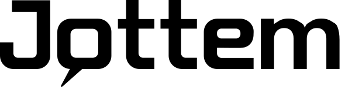

Warm
Jottem gaat over mensen en hun herinneringen. Het merk voelt als thuis: warm papier, geen koud systeem.
Dit is de merkgids van Jottem. Hier staat hoe het merk eruitziet, hoe het klinkt en hoe je het gebruikt. Alles wat je nodig hebt, kun je hier downloaden.
Versie 1.0 · augustus 2026 · vast te stellen door de projectgroep
In elk huis staat wel een schoenendoos vol foto's. Op zolder, in de kast, bij oma. Vol verhalen die niemand meer kent - tenzij we ze nu samen bewaren.
Jottem haalt dat materiaal uit de doos. Inwoners delen hun foto's en documenten. Anderen herkennen er iets in en vertellen erbij wat zij weten. Archieven en musea bewaren het, voor altijd en voor iedereen. Zo wordt erfgoed van iedereen, door iedereen.
Jottem is het participatieve erfgoedplatform van Inside Out Time Machines: dé plek waar inwoners en erfgoedorganisaties samen lokale geschiedenis verzamelen, verrijken en bewaren.
Jottem gaat over mensen en hun herinneringen. Het merk voelt als thuis: warm papier, geen koud systeem.
Iedereen moet kunnen meedoen, van kleinkind tot overgrootmoeder. Dus: gewone taal, duidelijke knoppen.
Open source, open standaarden, open data. Wat we samen maken, is van ons allemaal.
Een jottem krijgt een blijvende link en gaat nooit meer verloren. Bewaren doen we voor de lange termijn.
Eén bijdrage - een foto, menukaart of document mét de verhalen erbij - noemen we een jottem. "Jottem!" is ook wat je zegt als iets gelukt is. Die dubbele betekenis is het merk in één woord.
We schrijven heel begrijpelijk (taalniveau B1). Korte zinnen. Gewone woorden. We zeggen "je", we schrijven actief en we maken het persoonlijk. Vakjargon leggen we uit of laten we weg.
Het logo is een woordmerk: de naam Jottem in stevige, ronde letters. De O is een oranje spraakwolk - want bij Jottem vertellen mensen hun verhaal. Gebruik het liefst de kleurversie met schaduw, op een rustige, lichte achtergrond.

Houd rondom het logo altijd lege ruimte vrij: minstens de hoogte van de O. Maak het woordmerk nooit smaller dan 120 pixels op scherm of 30 mm op papier. Wordt het kleiner? Gebruik dan de losse O.
Het palet komt uit de schoenendoos: warm papier en karton als ondergrond, inkt om mee te schrijven, en één opvallende kleur - het oranje van de spraakwolk. Klik op een kleur om de HEX-code te kopiëren.
| Combinatie | Voorbeeld | Contrast | Gebruik |
|---|---|---|---|
| inkt op papier | tekst | 15,5 : 1 | alle tekst ✓ |
| wit op roest | tekst | 6,4 : 1 | alle tekst ✓ |
| roest op papier | tekst | 5,9 : 1 | alle tekst ✓ (linkkleur) |
| wit op oranje | tekst | 3,9 : 1 | alleen grote of vette tekst (knoppen, koppen) |
| oranje op papier | tekst | 3,6 : 1 | alleen groot of grafisch, geen kleine tekst |
Twee lettertypes, allebei open source (SIL OFL) en altijd lokaal gehost - nooit via een extern CDN. Zo laden pagina's snel, blijft de privacy van bezoekers beschermd en ziet het merk er overal hetzelfde uit.
Koppen - Fraunces (400 · 600 · 700 · italic)
Herken jij de bakker uit 1962?
AaBbCcDdEeFfGg HhIiJjKkLlMm 0123456789
"Mijn vader begon dit restaurant." - voor citaten en herinneringen
Lopende tekst en interface - Albert Sans (400 · 500 · 600 · 700)
AaBbCcDdEeFfGg HhIiJjKkLlMm 0123456789
Albert Sans is helder en vriendelijk. Het is de letter voor alle lopende tekst, knoppen, formulieren en bijschriften. Goed leesbaar, ook klein en op een telefoon.
| Rol | Voorbeeld | Font | Grootte / gewicht |
|---|---|---|---|
| H1 - paginakop | Uit de schoenendoos | Fraunces | 2,6–5 rem · 700 · regelhoogte 1,05 |
| H2 - sectiekop | Zo gaat het werken | Fraunces | 2,1–3,2 rem · 700 |
| H3 - subkop | Alle varianten | Fraunces | 1,4 rem · 600 |
| Body - lopende tekst | In elk huis staat een schoenendoos. | Albert Sans | 1,125 rem (18 px) · 400 · regelhoogte 1,65 |
| Label / eyebrow | 2 · Kleur | Albert Sans | 0,85 rem · 700 · kapitalen, letterspatiëring |
| Citaat / herinnering | "Dat is Wong Lee!" | Fraunces italic | 1,15 rem · 400 |
Laadt een font niet, dan vallen we terug op letters die er het meest op lijken:
font-family: 'Fraunces', Georgia, 'Times New Roman', serif; /* koppen */ font-family: 'Albert Sans', 'Segoe UI', system-ui, sans-serif; /* body en UI */
De grafische elementen komen uit de echte wereld van de schoenendoos: polaroids, plakband, memo-briefjes en karton. Alles ligt een beetje scheef, alsof je het net hebt neergelegd. Dat maakt Jottem direct herkenbaar.
Restaurant Lotus, 1973
Polaroid-kaart - wit kader, plakband, lichte rotatie (2–7°), bijschrift in Fraunces italic. Hét kader voor foto's en jottems.
Memo-briefje - geel, licht gedraaid. Voor citaten, herinneringen en korte notities.
Kaart - de bouwsteen voor lijstjes, stappen en blokken op alle pagina's.
Knoppen - primair: oranje met witte, vette tekst (hover: oranje donker). Secundair: oranje rand op transparant.
De spraakwolk-O - als los beeldmerk mag de O terugkomen als accent: bij citaten, als opsommingsteken of als watermerk. Spaarzaam gebruiken.
Lijnen en labels - dunne lijnen in kartonrand; archieflabels in Fraunces italic, alsof iemand ze met de hand op de doos schreef.
Jottem toont écht materiaal: familiefoto's, menukaarten, advertenties, documenten. Geen stockfoto's, geen gladde modellen. Warmte mag je zien.
Goed - warm en zacht: sepia(.55) saturate(.9) contrast(.92)
Vermijd - fel, hard en oververzadigd: dit is geen reclamefolder.
Beweging is bij Jottem klein en betekenisvol. Dingen schuiven zachtjes op hun plek, zoals je een foto op tafel legt. Niets flitst, niets springt.
De tijdmachineklok - de wijzers draaien terug: Jottem neemt je mee de tijd in. Het vaste motion-icoon van het merk.
beweeg eroverheen
Hover - een polaroid richt zich ietsje op als je eroverheen beweegt: draaiing bijna recht, 3% groter. Meer niet.
Reveal - bij het scrollen, één keer, nooit opnieuw.
prefers-reduced-motion aan heeft staan, krijgt géén animaties -
op deze pagina en op het platform.Zo ziet de huisstijl eruit op de plekken waar mensen Jottem tegenkomen.
In elk huis liggen schoenendozen vol foto's…
Bekijk het prototypeWebsite - papier als grond, woordmerk linksboven, één oranje primaire knop. Bekijk live.
Beste Anna, je foto "Markt 12, 1958" is goedgekeurd…
Bekijk je jottemE-mail - gekleurde kop met het witte woordmerk, daaronder wit met één duidelijke knop. Bij organisatiemails krijgt de kop de organisatiekleur en het organisatielogo.
Verdwenen horeca: deel je foto's en herinneringen.
Platform en prototype - donkere balk met de O in wit. Bekijk live.
De organisatiekleur vervangt hier het oranje; typografie, kaarten en vormtaal blijven Jottem.
Doe meeOrganisatiejottem - elke organisatie krijgt haar eigen kleur en logo bovenop de Jottem-basislaag (logo, kleurenpalet en favicon per organisatie, zie het ontwerp).
Alles wat je nodig hebt om met het merk te werken, in één keer te downloaden.
Alle logovarianten als SVG en PNG (1x en 2x), plus de favicons en een leesmij met de regels.
Download logopack (zip)Fraunces en Albert Sans als woff2, met de SIL OFL-licenties erbij. Host ze altijd zelf, mee met je site.
Download fonts (zip)De kleuren en lettertypes als kant-en-klare CSS-variabelen - dezelfde basislaag als op het platform.
Download tokens (css)/* Jottem design tokens - de basislaag van de huisstijl */ :root { --oranje: #d85a30; /* primair: knoppen, links, de O */ --oranje-donker: #c04e28; /* hover-toestand */ --roest: #a2401f; /* secundair: koppen op licht, linkkleur */ --inkt: #1f1e1c; /* tekst */ --grijs: #6b625c; /* bijschriften, gedempte tekst */ --papier: #faf6f1; /* achtergrond */ --karton: #e8d9c4; /* vlakken */ --kartonrand: #d3bfa3; /* randen en lijnen */ --geel: #fdf3c0; /* memo's en stickers */ --wit: #ffffff; /* kaarten */ --onderkant: #665245; /* footer */ --kop: 'Fraunces', Georgia, 'Times New Roman', serif; --body: 'Albert Sans', 'Segoe UI', system-ui, sans-serif; }
{kind=link}
{kind=link}
{kind=link}
{kind=link}
{kind=link}
{kind=link}
{kind=link}
{kind=link}
{kind=link}
{kind=link}
{kind=link}
{kind=link}
{kind=link}